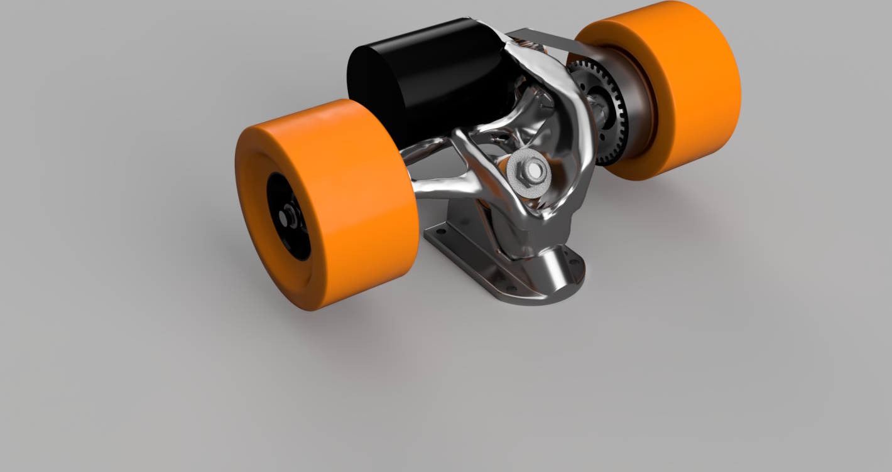
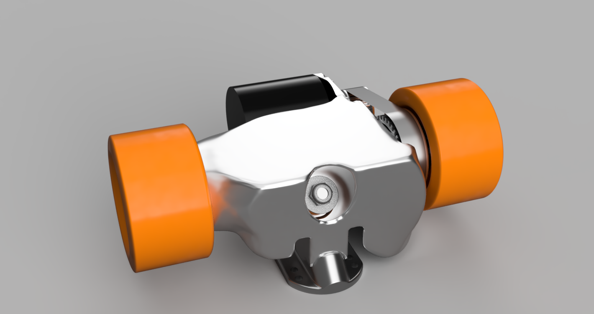
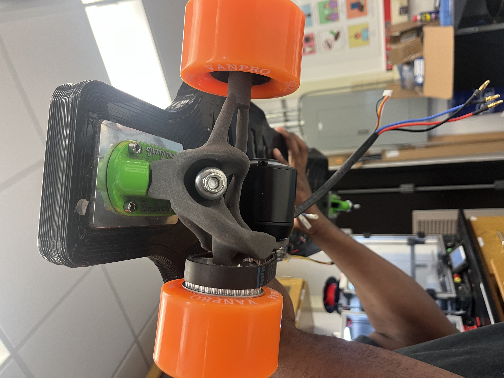
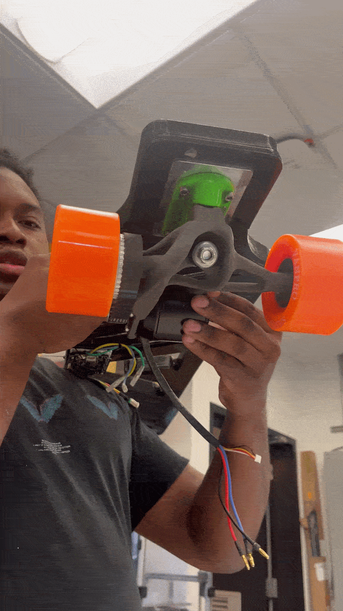

Generative Design Skateboard Trucks
A generative design case study producing a longboard hanger that doubles as a motor mount, optimized for structural performance and minimal mass.
Generative design is an advanced algorithm-driven design approach that enables engineers to explore multiple solutions based on predefined constraints related to geometries, materials, manufacturing methods, structural loads, and volume. The engineer specifies preserved geometries, obstacle areas, materials, and structural loads, and the software iterates through designs until all criteria are met — producing a model that is mathematically optimal for the defined constraints.
The geometries produced by the algorithm rarely showcase the symmetry seen in human-derived designs. Instead, the algorithm develops complex lattice structures and organic shapes that require powder-bed printing to manufacture, as this method places no limitations on geometry or orientation. This approach is used across aerospace and automotive industries — a notable example being Airbus' bionic partition for the A320, which came in 45% lighter than conventional designs and is projected to save up to 465 metric tonnes of CO₂ emissions per year.
The final project for this course was to design the hanger of Paris V2 trucks for a longboard that also doubles as a motor mount for a Flipsky motor. Constraints were set to minimize weight while achieving a safety factor of 2 on all loads, with obstacle geometries applied to preserve clearance for wheels, the motor, and the base plate.


The following structural loads were applied to the design:
| Load | Magnitude | Description |
|---|---|---|
| Rider Weight | 2000 N | Bearing load on axles pointing down — braces hanger to support rider |
| Carving / Turning | 600 N | Lateral force pointing into axle to account for turning loads |
| Motor Weight | 15 N | Remote force positioned over motor, applied to motor screw support holes |
| Belt Tension | 80 N | Applied to motor rod mount — accounts for belt tension and tugging force |
| Motor Torque | 357 N·m | Applied to motor mount as a moment — accounts for motor reaction torque |
ALSi10Mg possesses weaker mechanical properties than 17-4 PH stainless steel, resulting in a bloated design that appears blob-like. While obstacle geometries were set to maintain clearance around the pivot cup to ensure turning was possible, the aluminum result was heavy and aesthetically unappealing. The 17-4 PH steel design was significantly less bloated, provided better clearance for turning, and was more functionally viable overall.
Generative design proved useful in ensuring that mechanical load tolerances and safety factors were properly met, but it was difficult to guide the algorithm toward a geometry that worked functionally — requiring a large number of obstacle geometries to arrive at a feasible result. The approach would be most valuable in applications aimed at reducing part count and design complexity rather than producing drop-in replacements for existing components.


